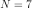
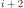
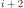
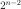
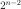
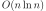
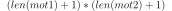
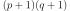
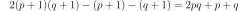

1A.e - TD noté, 5 décembre 2014#
Parcours de chemins dans un graphe acyclique (arbre).
Après chaque question, on vérifie sur un petit exemple que cela fonctionne comme attendu.
Exercice 1#
Ce premier exercice aborde la problème d’un parcours de graphe non récursif.
Q1
[2]:
def adjacence(N):
# on crée uen matrice vide
mat = [[0 for j in range(N)] for i in range(N)]
for i in range(0, N - 1):
mat[i][i + 1] = 1
return mat
[3]:
mat = adjacence(7)
mat
[3]:
[[0, 1, 0, 0, 0, 0, 0],
[0, 0, 1, 0, 0, 0, 0],
[0, 0, 0, 1, 0, 0, 0],
[0, 0, 0, 0, 1, 0, 0],
[0, 0, 0, 0, 0, 1, 0],
[0, 0, 0, 0, 0, 0, 1],
[0, 0, 0, 0, 0, 0, 0]]
Q2
Il faut ajouter 5 arcs au hasard en évitant d’ajouter deux fois le même.
[4]:
import random
def ajoute_points(mat, nb=5):
ajout = {}
while len(ajout) < 5:
i, j = random.randint(0, len(mat) - 1), random.randint(0, len(mat) - 1)
if i < j and (i, j) not in ajout:
mat[i][j] = 1
ajout[i, j] = 1
[5]:
ajoute_points(mat)
mat
[5]:
[[0, 1, 0, 0, 0, 0, 1],
[0, 0, 1, 0, 0, 0, 1],
[0, 0, 0, 1, 1, 0, 0],
[0, 0, 0, 0, 1, 1, 0],
[0, 0, 0, 0, 0, 1, 0],
[0, 0, 0, 0, 0, 0, 1],
[0, 0, 0, 0, 0, 0, 0]]
Q3
[6]:
def successeurs(adj, i):
ligne = adj[i]
# dans l'expression suivante,
# s est la valeur de la matrice (0 ou 1)
# i l'indice
return [i for i, s in enumerate(ligne) if s == 1]
[7]:
successeurs(mat, 1)
[7]:
[2, 6]
Q4
[8]:
def successeurs_dico(adj):
return {i: successeurs(adj, i) for i in range(len(adj))}
[9]:
dico = successeurs_dico(mat)
dico
[9]:
{0: [1, 6], 1: [2, 6], 2: [3, 4], 3: [4, 5], 4: [5], 5: [6], 6: []}
Q5
[10]:
def suites_chemin(chemin, dico):
dernier = chemin[-1]
res = []
for s in dico[dernier]:
res.append(chemin + [s])
return res
[11]:
suites_chemin([0, 1], dico)
[11]:
[[0, 1, 2], [0, 1, 6]]
Q6
[12]:
def parcours(adj):
dico = successeurs_dico(adj)
chemins = [[0]]
resultat = []
while len(chemins) > 0:
chemins2 = []
for chemin in chemins:
res = suites_chemin(chemin, dico)
if len(res) == 0:
# chemin est un chemin qui ne peut être continué
resultat.append(chemin)
else:
chemins2.extend(res)
chemins = chemins2
return resultat
[13]:
parcours(mat)
[13]:
[[0, 6],
[0, 1, 6],
[0, 1, 2, 3, 5, 6],
[0, 1, 2, 4, 5, 6],
[0, 1, 2, 3, 4, 5, 6]]
Q7
La différence entre un parcours en profondeur et un parcours en largeur tient au fait qu’on préfère d’abord explorer le successeur direct, puis le successeur direct plutôt que les voisins du successeurs directe. Dans le premier cas, on aboutit très vite à un chemin terminé. Dans le second cas, on obtient les chemins plutôt vers la fin de l’algorithme. Dans la version proposée par l’algorithme, c’est un parcours en largeur qui est implémenté.
Q8
La matrice en question est la suivante (pour ) :
[14]:
def adjacence8(N):
# on crée uen matrice vide
mat = [[0 for j in range(N)] for i in range(N)]
for i in range(0, N - 1):
for j in range(i + 1, N):
mat[i][j] = 1
return mat
adj = adjacence8(7)
adj
[14]:
[[0, 1, 1, 1, 1, 1, 1],
[0, 0, 1, 1, 1, 1, 1],
[0, 0, 0, 1, 1, 1, 1],
[0, 0, 0, 0, 1, 1, 1],
[0, 0, 0, 0, 0, 1, 1],
[0, 0, 0, 0, 0, 0, 1],
[0, 0, 0, 0, 0, 0, 0]]
[15]:
che = parcours(adj)
print("nombre", len(che))
che
nombre 32
[15]:
[[0, 6],
[0, 1, 6],
[0, 2, 6],
[0, 3, 6],
[0, 4, 6],
[0, 5, 6],
[0, 1, 2, 6],
[0, 1, 3, 6],
[0, 1, 4, 6],
[0, 1, 5, 6],
[0, 2, 3, 6],
[0, 2, 4, 6],
[0, 2, 5, 6],
[0, 3, 4, 6],
[0, 3, 5, 6],
[0, 4, 5, 6],
[0, 1, 2, 3, 6],
[0, 1, 2, 4, 6],
[0, 1, 2, 5, 6],
[0, 1, 3, 4, 6],
[0, 1, 3, 5, 6],
[0, 1, 4, 5, 6],
[0, 2, 3, 4, 6],
[0, 2, 3, 5, 6],
[0, 2, 4, 5, 6],
[0, 3, 4, 5, 6],
[0, 1, 2, 3, 4, 6],
[0, 1, 2, 3, 5, 6],
[0, 1, 2, 4, 5, 6],
[0, 1, 3, 4, 5, 6],
[0, 2, 3, 4, 5, 6],
[0, 1, 2, 3, 4, 5, 6]]
On fait une petite boucle pour intuiter le résultat :
[16]:
for i in range(5, 11):
adj = adjacence8(i)
che = parcours(adj)
print(i, "-->", len(che))
5 --> 8
6 --> 16
7 --> 32
8 --> 64
9 --> 128
10 --> 256
Cela ressemble beaucoup à des puissances de deux. Cela suggère un raisonnement par récurrence. Chaque noeud  est connecté à tous les suivantes
est connecté à tous les suivantes  , … On remarque que tous les chemins se termine par le dernier noeud
, … On remarque que tous les chemins se termine par le dernier noeud  . Lorsqu’on ajoute le noeud
. Lorsqu’on ajoute le noeud  au graphe, il sera le successeur de tous les autres. Pour un chemin donné, on peut soit l’ajouter à la fin, soit remplacer le dernier noeud par
au graphe, il sera le successeur de tous les autres. Pour un chemin donné, on peut soit l’ajouter à la fin, soit remplacer le dernier noeud par  . C’est ainsi qu’on multiplie par deux le
nombre de chemins. S’il y a noeuds, on obtient .
. C’est ainsi qu’on multiplie par deux le
nombre de chemins. S’il y a noeuds, on obtient .
Exercice 2#
On suppose qu’on dispose d’un tableau de nombres non trié. Ecrire une fonction qui retourne les trois éléments minimaux.
La première option consiste à utiliser la fonction sort. Celle-ci a un coût de  le programme est très simple.
[17]:
l = [-1, 4, 6, 4, 1, 9, 5]
l.sort()
l[:3]
[17]:
[-1, 1, 4]
Le problème qu’on cherche à résoudre est plus simple puisqu’il s’agit de ne garder que les trois premiers éléments. On n’a pas besoin de trier la fin de la liste. L’idée consiste à parcourir le tableau et à ne conserver que les trois premiers éléments. Si un élément est plus grand que le troisième élément, on ne s’en occupe pas.
[18]:
def garde_3_element(tab):
meilleur = []
for t in tab:
if len(meilleur) < 3:
meilleur.append(t)
meilleur.sort()
elif t < meilleur[2]:
meilleur[2] = t
meilleur.sort()
return meilleur
garde_3_element(l)
[18]:
[-1, 1, 4]
Même si on utilise un tri, le coût est en en  car le tri opère sur au plus trois éléments.
car le tri opère sur au plus trois éléments.
Exercice 3#
Q1
[19]:
def word2dict(mot):
return {i: mot[:i] for i in range(len(mot) + 1)}
[20]:
word2dict("mot"), word2dict("python")
[20]:
({0: '', 1: 'm', 2: 'mo', 3: 'mot'},
{0: '', 1: 'p', 2: 'py', 3: 'pyt', 4: 'pyth', 5: 'pytho', 6: 'python'})
Q2
[21]:
def two_words2dict(d1, d2):
return {(i, j): (d1[i], d2[j]) for i in d1 for j in d2}
[22]:
mot1 = "python"
mot2 = "piton"
d1 = word2dict(mot1)
d2 = word2dict(mot2)
vertices = two_words2dict(d1, d2)
vertices
[22]:
{(1, 2): ('p', 'pi'),
(3, 2): ('pyt', 'pi'),
(0, 0): ('', ''),
(5, 0): ('pytho', ''),
(6, 4): ('python', 'pito'),
(3, 0): ('pyt', ''),
(0, 4): ('', 'pito'),
(5, 4): ('pytho', 'pito'),
(1, 4): ('p', 'pito'),
(6, 0): ('python', ''),
(5, 5): ('pytho', 'piton'),
(1, 3): ('p', 'pit'),
(0, 5): ('', 'piton'),
(2, 1): ('py', 'p'),
(5, 1): ('pytho', 'p'),
(4, 2): ('pyth', 'pi'),
(2, 5): ('py', 'piton'),
(1, 0): ('p', ''),
(6, 5): ('python', 'piton'),
(3, 5): ('pyt', 'piton'),
(0, 1): ('', 'p'),
(5, 3): ('pytho', 'pit'),
(4, 1): ('pyth', 'p'),
(0, 2): ('', 'pi'),
(3, 3): ('pyt', 'pit'),
(1, 5): ('p', 'piton'),
(3, 4): ('pyt', 'pito'),
(6, 1): ('python', 'p'),
(3, 1): ('pyt', 'p'),
(5, 2): ('pytho', 'pi'),
(4, 4): ('pyth', 'pito'),
(1, 1): ('p', 'p'),
(6, 3): ('python', 'pit'),
(2, 0): ('py', ''),
(6, 2): ('python', 'pi'),
(4, 3): ('pyth', 'pit'),
(2, 2): ('py', 'pi'),
(4, 5): ('pyth', 'piton'),
(2, 3): ('py', 'pit'),
(4, 0): ('pyth', ''),
(0, 3): ('', 'pit'),
(2, 4): ('py', 'pito')}
Q3
Il y a autant d’éléments que  puisqu’on fait une double boucle sur toutes les positions + 1 pour 0. Donc  si  et
et  sont les tailles des deux mots.
sont les tailles des deux mots.
[23]:
len(vertices), (len(mot1) + 1) * (len(mot2) + 1)
[23]:
(42, 42)
Q4
[24]:
def add_edge_hv(vertices):
edges = {}
for edge1 in vertices:
i1, j1 = edge1
for edge2 in vertices:
i2, j2 = edge2
if (i2 - i1 == 1 and j1 == j2) or (j2 - j1 == 1 and i1 == i2):
edges[edge1, edge2] = 1
return edges
[25]:
edges = add_edge_hv(vertices)
edges
[25]:
{((5, 5), (6, 5)): 1,
((2, 1), (3, 1)): 1,
((5, 0), (5, 1)): 1,
((1, 4), (2, 4)): 1,
((6, 2), (6, 3)): 1,
((0, 3), (1, 3)): 1,
((2, 1), (2, 2)): 1,
((5, 3), (6, 3)): 1,
((5, 4), (6, 4)): 1,
((1, 1), (2, 1)): 1,
((4, 0), (5, 0)): 1,
((1, 1), (1, 2)): 1,
((1, 0), (2, 0)): 1,
((2, 2), (2, 3)): 1,
((1, 5), (2, 5)): 1,
((4, 1), (5, 1)): 1,
((3, 3), (3, 4)): 1,
((1, 2), (2, 2)): 1,
((0, 4), (0, 5)): 1,
((1, 4), (1, 5)): 1,
((4, 5), (5, 5)): 1,
((3, 5), (4, 5)): 1,
((2, 4), (2, 5)): 1,
((4, 2), (4, 3)): 1,
((3, 0), (3, 1)): 1,
((4, 3), (5, 3)): 1,
((6, 1), (6, 2)): 1,
((5, 2), (6, 2)): 1,
((2, 5), (3, 5)): 1,
((0, 4), (1, 4)): 1,
((3, 3), (4, 3)): 1,
((1, 2), (1, 3)): 1,
((0, 1), (1, 1)): 1,
((4, 2), (5, 2)): 1,
((3, 1), (3, 2)): 1,
((2, 0), (2, 1)): 1,
((5, 1), (6, 1)): 1,
((2, 4), (3, 4)): 1,
((4, 0), (4, 1)): 1,
((3, 2), (4, 2)): 1,
((4, 4), (4, 5)): 1,
((1, 0), (1, 1)): 1,
((2, 3), (2, 4)): 1,
((3, 1), (4, 1)): 1,
((5, 2), (5, 3)): 1,
((6, 0), (6, 1)): 1,
((6, 3), (6, 4)): 1,
((2, 3), (3, 3)): 1,
((0, 2), (1, 2)): 1,
((4, 3), (4, 4)): 1,
((0, 0), (1, 0)): 1,
((4, 1), (4, 2)): 1,
((5, 4), (5, 5)): 1,
((1, 3), (1, 4)): 1,
((3, 4), (3, 5)): 1,
((3, 4), (4, 4)): 1,
((5, 0), (6, 0)): 1,
((0, 0), (0, 1)): 1,
((0, 1), (0, 2)): 1,
((4, 4), (5, 4)): 1,
((1, 3), (2, 3)): 1,
((2, 0), (3, 0)): 1,
((3, 0), (4, 0)): 1,
((0, 3), (0, 4)): 1,
((2, 2), (3, 2)): 1,
((3, 2), (3, 3)): 1,
((0, 5), (1, 5)): 1,
((5, 3), (5, 4)): 1,
((6, 4), (6, 5)): 1,
((0, 2), (0, 3)): 1,
((5, 1), (5, 2)): 1}
Q5
Pour chaque noeud, on ajoute deux arcs excepté les noeuds qui correspond à la fin des mots. Donc .
[26]:
len(edges), 2 * len(mot1) * len(mot2) + len(mot1) + len(mot2)
[26]:
(71, 71)
Q6
On s’inspire de la fonction précédente. Il serait plus efficace de les fusionner.
[27]:
def cout(m1, m2):
c1 = m1[-1]
c2 = m2[-1]
if c1 == c2:
return 0
else:
return 1
def ajoute_diagonale(edges, vertices):
# edges = { } # on n'ajoute surtout pas cette ligne, sinon c'est comme si on effaçait tout ce que contient
# edges
for edge1 in vertices:
i1, j1 = edge1
for edge2 in vertices:
i2, j2 = edge2
if i2 - i1 == 1 and j2 - j1 == 1:
edges[edge1, edge2] = cout(vertices[edge2][0], vertices[edge2][1])
[28]:
ajoute_diagonale(edges, vertices)
edges
[28]:
{((2, 1), (3, 1)): 1,
((5, 0), (5, 1)): 1,
((5, 4), (6, 5)): 0,
((3, 3), (4, 4)): 1,
((6, 1), (6, 2)): 1,
((5, 4), (6, 4)): 1,
((2, 3), (3, 4)): 1,
((2, 0), (2, 1)): 1,
((0, 0), (1, 1)): 0,
((1, 1), (2, 1)): 1,
((3, 1), (4, 2)): 1,
((2, 4), (2, 5)): 1,
((0, 4), (0, 5)): 1,
((1, 4), (1, 5)): 1,
((3, 5), (4, 5)): 1,
((0, 4), (1, 5)): 1,
((0, 5), (1, 5)): 1,
((3, 0), (3, 1)): 1,
((5, 1), (6, 2)): 1,
((2, 2), (2, 3)): 1,
((0, 4), (1, 4)): 1,
((4, 0), (5, 1)): 1,
((3, 3), (4, 3)): 1,
((1, 2), (1, 3)): 1,
((1, 4), (2, 4)): 1,
((2, 4), (3, 4)): 1,
((0, 1), (1, 2)): 1,
((4, 4), (4, 5)): 1,
((2, 4), (3, 5)): 1,
((3, 1), (4, 1)): 1,
((3, 4), (3, 5)): 1,
((1, 1), (1, 2)): 1,
((2, 3), (3, 3)): 1,
((1, 4), (2, 5)): 1,
((0, 2), (1, 2)): 1,
((0, 0), (1, 0)): 1,
((5, 4), (5, 5)): 1,
((5, 2), (5, 3)): 1,
((2, 2), (3, 3)): 0,
((5, 0), (6, 0)): 1,
((3, 4), (4, 4)): 1,
((5, 1), (6, 1)): 1,
((0, 1), (1, 1)): 1,
((3, 0), (4, 0)): 1,
((0, 3), (0, 4)): 1,
((2, 2), (3, 2)): 1,
((3, 2), (4, 3)): 1,
((4, 2), (5, 2)): 1,
((5, 3), (5, 4)): 1,
((5, 0), (6, 1)): 1,
((6, 0), (6, 1)): 1,
((5, 2), (6, 2)): 1,
((5, 5), (6, 5)): 1,
((2, 0), (3, 1)): 1,
((4, 2), (5, 3)): 1,
((6, 2), (6, 3)): 1,
((4, 3), (5, 4)): 0,
((0, 2), (1, 3)): 1,
((5, 3), (6, 3)): 1,
((1, 5), (2, 5)): 1,
((4, 0), (5, 0)): 1,
((1, 0), (2, 1)): 1,
((1, 0), (2, 0)): 1,
((1, 3), (2, 4)): 1,
((2, 1), (3, 2)): 1,
((2, 1), (2, 2)): 1,
((1, 2), (2, 2)): 1,
((5, 3), (6, 4)): 1,
((4, 1), (5, 1)): 1,
((3, 1), (3, 2)): 1,
((0, 3), (1, 3)): 1,
((3, 4), (4, 5)): 1,
((2, 3), (2, 4)): 1,
((3, 0), (4, 1)): 1,
((4, 3), (5, 3)): 1,
((4, 0), (4, 1)): 1,
((6, 4), (6, 5)): 1,
((0, 3), (1, 4)): 1,
((5, 2), (6, 3)): 1,
((1, 0), (1, 1)): 1,
((6, 3), (6, 4)): 1,
((1, 1), (2, 2)): 1,
((4, 3), (4, 4)): 1,
((4, 4), (5, 5)): 1,
((3, 3), (3, 4)): 1,
((2, 5), (3, 5)): 1,
((4, 1), (4, 2)): 1,
((1, 3), (1, 4)): 1,
((4, 2), (4, 3)): 1,
((1, 2), (2, 3)): 1,
((0, 0), (0, 1)): 1,
((0, 1), (0, 2)): 1,
((4, 4), (5, 4)): 1,
((4, 1), (5, 2)): 1,
((1, 3), (2, 3)): 1,
((2, 0), (3, 0)): 1,
((3, 2), (3, 3)): 1,
((3, 2), (4, 2)): 1,
((4, 5), (5, 5)): 1,
((0, 2), (0, 3)): 1,
((5, 1), (5, 2)): 1}
Q7
L’algorithme du plus court chemin.
[29]:
def loop_on_edges(distance, edges):
for edge, cout in edges.items():
v1, v2 = edge
if v1 in distance and (
v2 not in distance or distance[v2] > distance[v1] + cout
):
distance[v2] = distance[v1] + cout
Q8
La question était sans doute un peu mal posé car il est beaucoup plus facile pour la fonction loop_on_edges de savoir si le dictionnaire distance est modifié ou non. On la modifie pour qu’elle retourne le nombre de mises à jour.
[30]:
def loop_on_edges(distance, edges):
misejour = 0
for edge, cout in edges.items():
v1, v2 = edge
if v1 in distance and (
v2 not in distance or distance[v2] > distance[v1] + cout
):
distance[v2] = distance[v1] + cout
misejour += 1
return misejour
Puis l’algorithme final :
[31]:
def plus_court_chemin(edges):
distance = {(0, 0): 0}
m = 1
while m > 0:
m = loop_on_edges(distance, edges)
return distance
[32]:
resultat = plus_court_chemin(edges)
resultat
[32]:
{(0, 1): 1,
(3, 2): 2,
(0, 0): 0,
(5, 0): 5,
(6, 4): 3,
(3, 0): 3,
(0, 4): 4,
(5, 4): 2,
(2, 1): 1,
(6, 0): 6,
(5, 5): 3,
(2, 5): 4,
(1, 3): 2,
(2, 3): 2,
(1, 4): 3,
(2, 4): 3,
(4, 2): 3,
(1, 0): 1,
(0, 3): 3,
(6, 5): 2,
(3, 5): 3,
(1, 2): 1,
(5, 1): 4,
(5, 3): 3,
(3, 3): 1,
(1, 5): 4,
(4, 1): 3,
(6, 1): 5,
(3, 1): 2,
(5, 2): 4,
(4, 4): 2,
(1, 1): 0,
(6, 3): 4,
(2, 0): 2,
(6, 2): 5,
(4, 3): 2,
(2, 2): 1,
(4, 5): 3,
(0, 5): 5,
(4, 0): 4,
(3, 4): 2,
(0, 2): 2}
Q9
Comme on a tout fait avec ces deux mots, il suffit de prendre la bonne valeur dans le tableau distance :
[33]:
print(mot1, mot2)
resultat[len(mot1), len(mot2)]
python piton
[33]:
2
Exercice 4#
On a un tableau d’entiers l = [1, 8, 5, 7, 3, 6, 9]. On veut placer les entiers pairs en premiers et les entiers impairs en derniers : 8, 6, 1, 5, 7, 3, 9. Ecrire une fonction qui fait cela.
Le coût d’un tri est de . On construit d’abord le couple (parité, élément) pour chaque élément puis on trie de table. C’est la solution la plus simple.
[34]:
l = [1, 8, 5, 7, 3, 6, 9]
l2 = [(i % 2, i) for i in l]
l2.sort()
res = [b for a, b in l2]
res
[34]:
[6, 8, 1, 3, 5, 7, 9]
Dans cas précis, on ne souhaite pas trier sur les nombres mais sur leur parité. En quelque sorte, on ne s’intéresse pas de savoir dans quel ordre deux nombres pairs seront triés. Cela réduit le nombre d’opérations à effectuer. Une idée consiste à parcourir le tableau par les deux bouts et à échanger deux nombres dès que leur parité sont mal classées.
[35]:
def trie_parite(l):
i = 0
j = len(l) - 1
while i < j:
while i < j and l[i] % 2 == 0:
i += 1
while i < j and l[j] % 2 == 1:
j -= 1
if i < j:
ech = l[i]
l[i] = l[j]
l[j] = ech
i += 1
j -= 1
l = l.copy()
trie_parite(l)
l
[35]:
[8, 6, 5, 3, 7, 9, 1]
[36]: